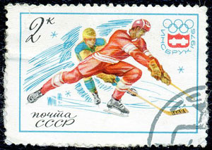

This is an archived copy of History Matters, provided by the Roy Rosenzweig Center for History and New Media. To explore this content in a new interface, visit Who Built America?.

Cold War International History Project Digital Archive
http://digitalarchive.wilsoncenter.org/
Created and maintained by the Cold War International History Project, Woodrow Wilson International Center for Scholars, Washington, D.C.
Reviewed May-June, 2013.
The Cold War International History Project (cwihp) has been an essential resource for historians of twentieth-century international relations ever since its founding in 1991 under the auspices of the Woodrow Wilson International Center for Scholars in Washington, D.C. Devoted to obtaining and translating historical documents from archives around the world, the cwihp has facilitated efforts by a generation of researchers to examine the Cold War by taking account of newly released archival sources from the Soviet Union, China, Cuba, Vietnam, and other nations of the former communist bloc. The thriving state of Cold War history owes much to the organization’s publications (especially the cwihp Bulletin), Web site, conferences, and internship programs.

On March 28, 2013, the Wilson Center launched a major new initiative that will enhance its position at the heart of the field of international history: a vast online collection entitled Digital Archive: International History Declassified. Whereas the old cwihp Web site held approximately 3,000 documents, the new one contains more than 4,800, with another 1,000 to be added within six months following the launch and many more in the years ahead.
Materials cover numerous aspects of the Cold War, including tried-and-true topics such as Sino-Soviet relations and the Vietnam War as well as less predictable topics such as the nonaligned movement and the 19771978 war in the Horn of Africa. The archive also contains remarkable material reflecting two other priorities of the Wilson Center that reach beyond the chronological parameters of the Cold War: the history of North Korea and of nuclear proliferation in nations such as Brazil, India, and South Africa. All told, the site contains documents from one hundred archives around the world, translated by cwihp-affiliated scholars from twenty-four languages.
Just as impressive as the scope of the Digital Archive are the ease and efficiency of the search functions. Users can search via key words and browse documents by country of origin or by year. Scholars will undoubtedly appreciate the simplicity of these mechanisms, but the main beneficiaries may be teachers, journalists, and general readers interested in international history but lacking detailed background knowledge. Also helpful for nonspecialists are biographical sketches of key policy makers and brief essays introducing some of the collections.
So impressive is the site that the only ground for complaint is that it is not larger and more complete. For instance, the collection on the origins of the Cold Wara vast subjectincludes only forty-six documents, some of them classic texts widely available in books or elsewhere on the Web. The collection dealing with the nonaligned movement consists almost entirely of documents from the Albanian archive, surely a fascinating and underutilized resource but hardly the most crucial repository of material on this subject. A section entitled The Economic Cold War contains only two documents from before 1963.
But such weaknesses are trivial. The Digital Archive is a monumental achievement that will enhance scholarship and, with luck, public debate on the historical roots of contemporary problems for many years to come. Best of all, the online format means that the collection can change and expand as new documents come to light and new subjects draw attention.
Mark Atwood Lawrence
University of Texas
Austin, Texas